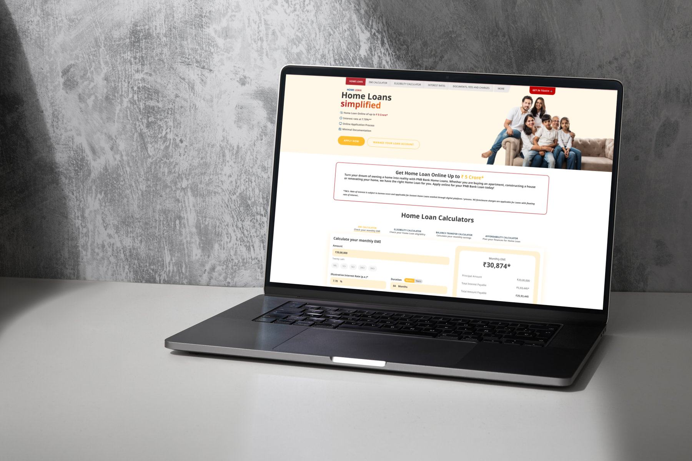
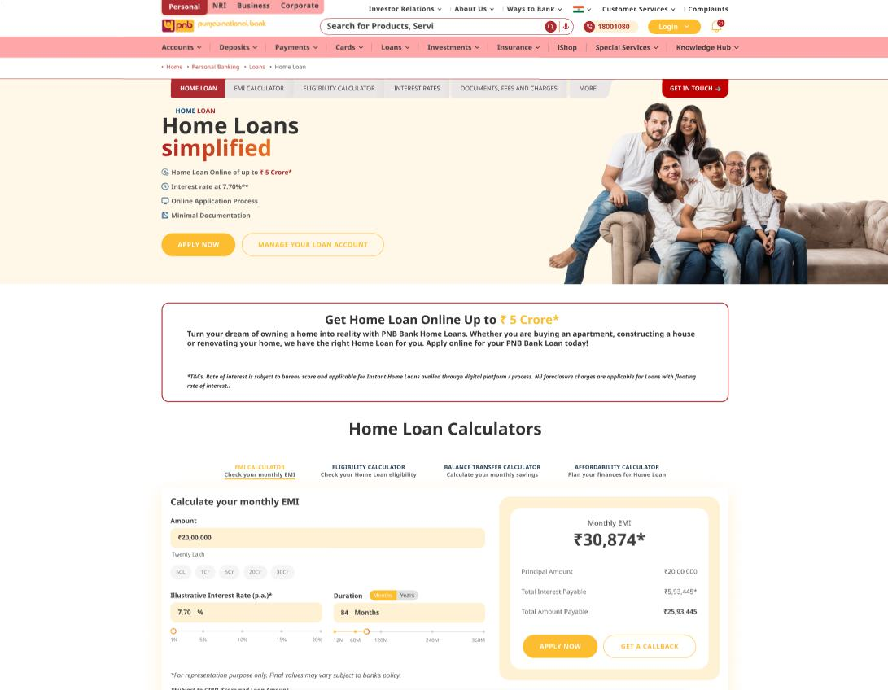
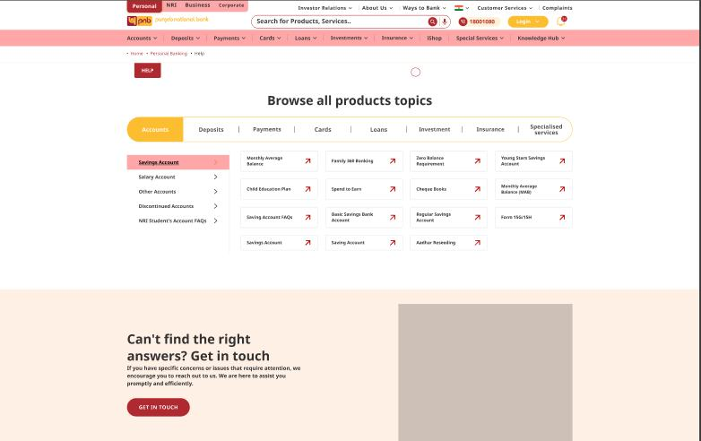
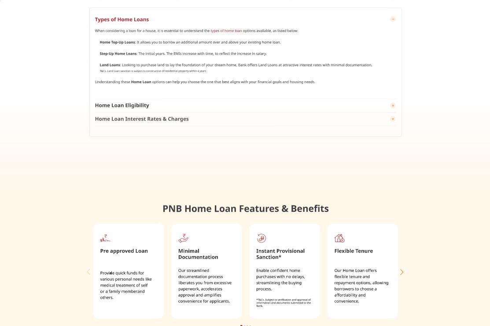
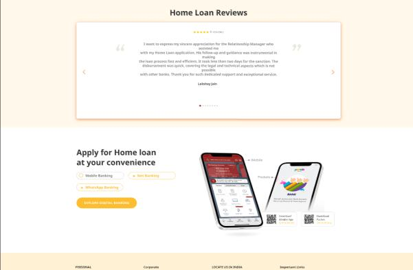
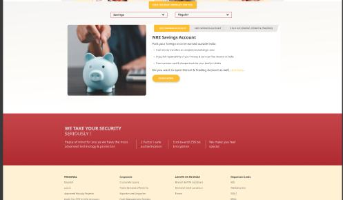

A Better PNB: redesigning a banking website
A UI/UX case study on making PNB's net banking site easier to navigate, less cluttered and softer on the eye, so people can finish everyday tasks without help.
View case study →
Problem
PNB's banking website is hard to navigate. Complex menus and a cluttered homepage frustrate people trying to transfer funds, pay bills or manage accounts. A lack of personalization and an outdated design make it worse, especially on mobile.
These issues lead to inefficiency, frustration and weaker customer retention. This case study improves usability by tackling navigation, information overload and visual design.
Unclear navigation
Users can't quickly find the services they need.
No personalization
There's no personalized content or dashboard to reach the most-used services fast.
Cluttered homepage
Too much information makes it hard to focus on the main goal.
Dated design
Outdated visuals and typography hurt readability and overall look.
A bank website should feel calm and obvious, so people can get to what they came for in a few clicks.
Design process
Discovery
Primary & secondary researchSurveys and interviews to understand how users see PNB's current site, the challenges they face, and which problem statements matter most.
Ideation
HMW & solutionsUsing How Might We questions, we focused on two flows: making important features visible, and redesigning the UI with a consistent, softer colour palette.
Implementation
Wireframes & UIWe set the visual direction, built wireframes and interfaces from the design system, and finished with a functional prototype.
Interview questions
- Q1Was the log in successful during your last visit to the PNB website?
- Q2How user friendly did the navigation feel after going through the site?
- Q3How visually clear and well organized did the page/app appear?
- Q4How did you feel about the website's mobile responsiveness?
- Q5How likely would you be to recommend PNB's website/app based on your experience?
- Q6What was the single most frustrating part of your last visit to PNB's platform?
User personas
Ramesh Verma
As a small business owner who isn't tech savvy, I want to manage my banking quickly and without confusion, so I can focus on my business instead of struggling with the site.
Goals
- Easily access balance and transaction history
- Make fund transfers without external help
- Understand icons and menu options clearly
- Navigate without clicking wrong buttons
- Feel confident using the website on his own
Challenges
- Unclear icons and too many options on the homepage
- Hard to find frequently used services
- Small text and cluttered design confuse him
- Often needs family to help complete tasks
Aditi Mehra
As a student who's always on the go, I want to do quick transactions on my mobile without glitches, so I can save time and avoid frustration.
Goals
- Perform fast UPI transfers
- View mini statements and balances quickly
- Use the mobile site without needing to zoom
- Complete tasks in 2 to 3 taps
- Get a modern, efficient digital experience
Challenges
- Website not optimized for mobile screens
- Touch targets (buttons and icons) too small
- Slow load times and freezing elements
- Broken links or redirections
User journey
| Stage | Action | Feeling | Pain point |
|---|---|---|---|
| Homepage | User opens PNB's website on a laptop | Neutral, slightly impatient | Homepage, navigation bar |
| Searching for login | They look around for the net banking login area | Annoyed, frustrated | Login buttons, popups |
| Login process | Users try logging in (some succeed smoothly, others retry) | Tense | Login form, CAPTCHA, loading speed |
| Using services | Access account summary, check statements and more | Confident, independent | Account dashboard, quick view |
| Completing a task | Make a payment, download a statement and more | Nervous, then accomplished | Payment module, statement view |
Typography
Classic and geometric. Outfit is a variable font family crafted and designed for computer screens.
PQRSTUVWXYZ
Colour palette
A softer, warmer palette built on PNB's own red and gold, with a cream base so the page feels calmer.
User interface
The final designs use the new palette and type, simpler menus, and clearer grouping so the main actions stand out.





Fewer choices on screen, softer colours and clearer paths make the site feel easier to trust.